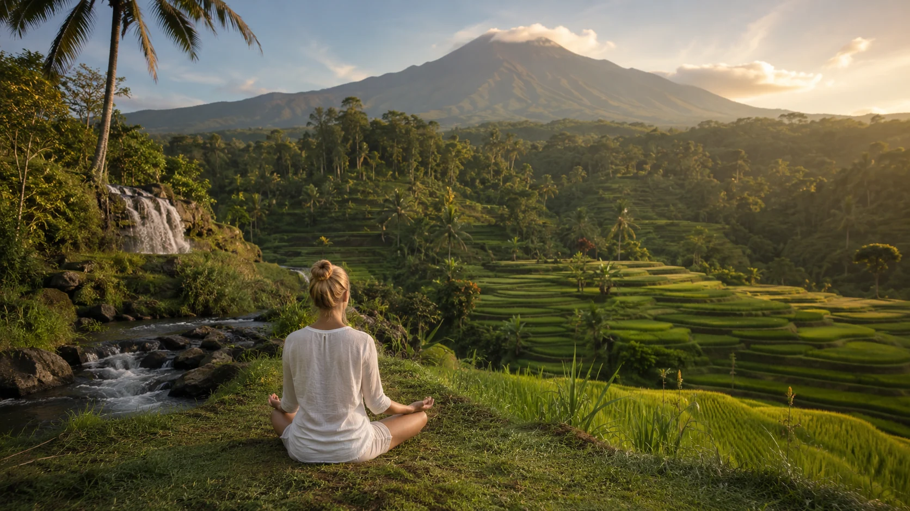
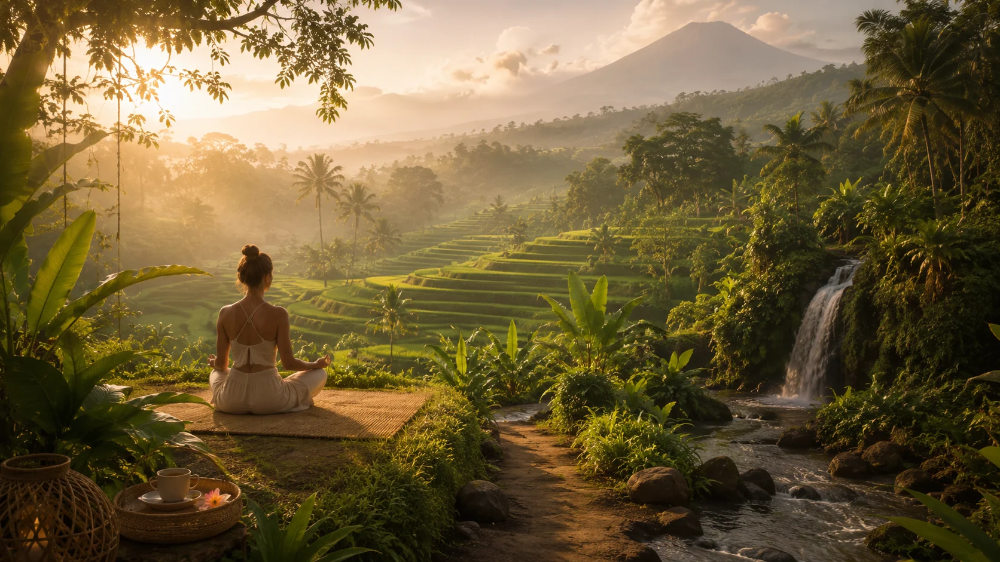

Green Lombok Guide
Tetebatu: Lombok’s Green Escape for Nature, Meditation & Slow Travel
A softer side of Lombok at the foot of Mount Rinjani — where rice fields, waterfalls, village life, fresh air and slow walks become part of the wellness journey.

Tetebatu is the kind of place that reminds you wellness does not always need a studio. Sometimes it is a morning walk, fresh mountain air, a waterfall, a local guide, a simple meal and enough silence to notice how you actually feel.
Many travelers come to Lombok for beaches, surf and the Gili Islands. Tetebatu offers another doorway into the island: green, inland, rural and quiet. Set near the foothills of Mount Rinjani, it is known for rice fields, waterfalls, traditional village life and a cooler, more spacious atmosphere.
For holistic travelers, Tetebatu can be deeply restorative. It is less about doing many organized wellness activities and more about letting the landscape become the practice. You walk more slowly. You breathe differently. You hear water, insects, birds, wind and village sounds. You remember that healing can be simple.
If Kuta Lombok is where you move with ocean energy, Tetebatu is where you return to earth.

Nature medicine
Why Tetebatu feels so different
Tetebatu’s power is in its texture: green rice fields, narrow paths, palm trees, waterfalls, gardens, local farms and the presence of Rinjani in the background. The pace is naturally slower than the south coast, and that slower pace can help your nervous system settle.
This is why Tetebatu is a strong addition to any Lombok wellness journey. It gives you an inland reset. After days of beach cafés, surf lessons, social dinners or retreat intensity, Tetebatu offers a quieter kind of integration.
Tetebatu is not a place to rush through. Its medicine appears when you walk, listen and let the green world take the lead.
Practice
Meditation, walking and slow presence
In Tetebatu, meditation does not have to look formal. A rice-field walk can become meditation if you let your attention stay with your steps. A waterfall visit can become meditation if you listen before taking photos. A morning tea can become meditation if you stop scrolling long enough to feel the air.
Walking meditation
Choose a slow walk with a local guide, put your phone away between photos and let your attention rest on sound, breath and sensation.
Water meditation
At waterfalls, pause before entering. Listen to the sound. Notice the body. Let the coolness bring you into the present moment.
Mountain contemplation
If Rinjani is visible, take a few minutes to simply look. No task, no photo, no explanation — just presence.
Evening integration
End the day with journaling, stretching, a simple meal and early sleep. Tetebatu rewards travelers who do less.
Slow guide
Holistic things to do in Tetebatu
These experiences are not all “wellness” in the commercial sense. That is exactly why they matter. They support presence, connection and relationship with place.
01 · Rice fields
Walk through the rice fields with a local guide
A guided walk helps you understand the landscape rather than only pass through it. Ask questions, move slowly and support people who know the land intimately.
02 · Waterfalls
Visit waterfalls as a reset, not a race
Tetebatu is known for waterfall experiences such as Sarang Walet. Go with care, wear appropriate shoes and treat the visit as time in nature rather than a content mission.
03 · Village life
Experience local village rhythm
Slow travel in Tetebatu can include farming activities, traditional processes, local food, coffee, coconut oil, spices and everyday village life. Let the encounter be respectful and reciprocal.
04 · Breath & meditation
Create your own morning practice
You do not need a formal class to practice here. Sit outside, breathe gently for five minutes, stretch, journal and let the mountain air support you.
05 · Eco-conscious experiences
Support nature-based tourism
Choose local guides and experiences that protect the environment, respect the community and keep benefits close to the village.
Gentle itinerary
A 2-night Tetebatu slow travel flow
Tetebatu works best when you do not rush it as a quick stop. Two nights gives your body time to adjust to the slower pace.
Arrive and do almost nothing
Check in, walk nearby, drink tea, eat simply and sleep early. Let the nervous system understand that the pace has changed.
Walk, waterfall, rest
Book a local guide for rice fields and waterfall time. Keep the afternoon soft for journaling, stretching or a quiet nap.
Morning practice and onward travel
Sit, breathe, walk slowly and leave without rushing. Carry the rhythm with you to Kuta, the Gilis or your next retreat.
Respect
How to visit Tetebatu consciously
Tetebatu is not a wellness theme park. It is a living village area with local families, farms, traditions and daily work. Conscious travel means dressing respectfully, asking before taking photos, using local guides, paying fairly and not entering private land without permission.
It also means accepting that the most meaningful experiences may not be dramatic. A slow conversation, a view across the fields, a shared cup of coffee or a quiet walk can be the part you remember most.
FAQ
Questions travelers ask
Is Tetebatu good for wellness travelers?
Yes. Tetebatu is ideal for nature-based wellness, slow travel, meditation, rice-field walks, waterfalls and a quieter inland experience away from the beach towns.
How long should I stay in Tetebatu?
Two nights is a gentle minimum if you want the place to work on you. One day can feel rushed; three nights gives even more space for rest and local experiences.
Can I do yoga or meditation in Tetebatu?
Formal class schedules may be more limited than in Kuta or the Gilis, but Tetebatu is very supportive for personal yoga, breathwork, meditation, stretching and walking practices.
What makes Tetebatu different from Kuta Lombok?
Kuta is coastal, social and surf-oriented. Tetebatu is greener, cooler, slower and more village-based, with rice fields, waterfalls and views around Mount Rinjani.
Discover nature-based wellness around Lombok
Explore facilitators, retreats, meditation, bodywork, breathwork, yoga and conscious experiences across Lombok — from Kuta and South Lombok to Tetebatu, Senggigi and the Gili Islands.
Travel note: paths, waterfalls and mountain-area conditions can change with rain and season. Use local guides where appropriate and check current access before visiting natural sites.